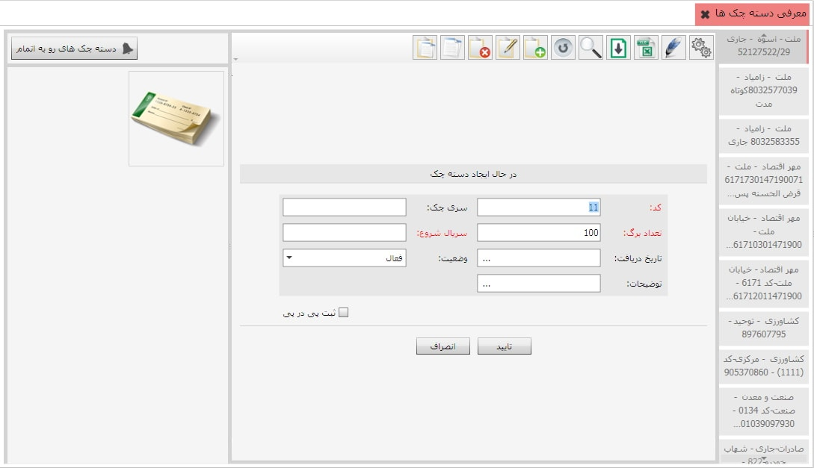

شما می توانید دسته چک هایی که از هر یک از حساب های بانکی دریافت نموده اید به سیستم معرفی کنید، برای این کار از منوی اطلاعات چک ها، معرفی دسته چک ها را انتخاب نمایید. در ابتدای کار لیست مربوط به اطلاعات دسته چک ها خالی است، برای معرفی دسته چک جدید ابتدا از سمت راست صفحه ی زیر بانک مورد نظر را انتخاب کنید، سپس از نوار ابزار جدول مربوطه گزینه اضافه را بزنید تا فرم ایجاد دسته چک نمایش داده شود:

کد: کد اولین دسته چک به صورت پیش فرض 11 بوده
و قابل تغییر است، اما پس از تایید فرم قابل ویرایش نمی باشد.
سری چک: در این فیلد نیز سری دسته چک مورد نظرتان را وارد نمایید.
تعداد برگ: تعداد برگ
به صورت پیش فرض 100 است آن را مطابق با دسته چک خود ویرایش نمایید.
سریال شروع: در این فیلد سریال اولین برگ چک را وارد کنید.
در انتها با مشخص کردن تاریخ دریافت، وضعیت و در صورت نیاز توضیحات مربوطه
می توانید فرم را تایید نمایید تا دسته چک مورد نظرتان ایجاد گردد.
همچنین با استفاده از کلید فوق که در سمت چپ صفحه ی معرفی دسته چک ها قرار دارد می توانید برای دسته چک های رو به اتمام هشدار تعیین کنید.